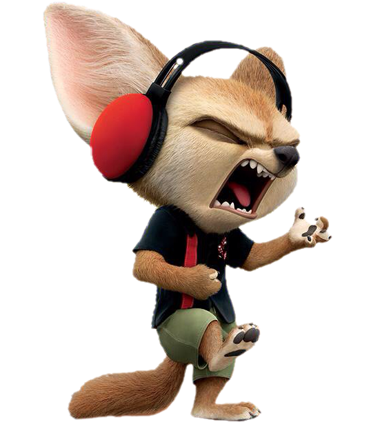

Tooltips
Do you want to give more information to your users poping out from a tooltip? Let's look at some examples.
Finnick: a friend of Nick Wilde from Zootopia.
Nick Wilde: a sly fox that sells popsickles.
Let's see how you can implement them.
- First, include the jQuery plug-in we provide.
- After it, include our plug-in WETooltip.js
- Insert our minimum styling sheet WETooltip.css
-
Add a class, id, or any target identifier to the object you want to pop-up the tooltip. This is our example.
<p> <span class="tooltip1">Finnick</span>: a friend of Nick Wilde from Zootopia. </p> -
Initialize the plug-in with the following code.
$(document).ready(function() { $(".tooltip1").WETooltip({ "offsetX": 10, "position": "up", "text": "<div class='img-tooltip'></div><p>He can be very <b>angry</b>!</p>" }); });
- offsetX: optional, Integer. The amount of pixels the arrow of the tooltip will leave from the outside (left / right) of the element.
- offsetY: optional, Integer. The amount of pixels the arrow of the tooltip will leave from the outside (top / bottom) of the element.
- position: optional, String. Default down. Where the tooltip should be displayed. If the tooltip doesn't fits on the specified side, it will be placed the opposite side. If this doesn't fit either, it will be placed down.
- text: required, String. This option allows you to also include HTML structures.
-
animation: optional, String. Name of a class that contains an animation. We provide the following animations.
- scaleFade: scales the tooltip and fades it in.
- You can also add your custom animations!